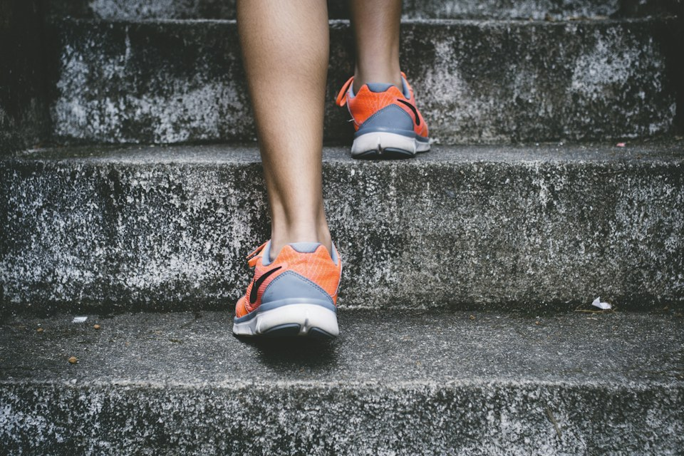

Solidarity
Show up alongside Kath and one another. Solidarity means standing with someone, not just for them.
Solidarity, dignity, and movement.
A movement and fundraising campaign created for Kath, who is living with Motor Neuron Disease (MND/ALS), and for everyone choosing to stand alongside her.
Created for Kath. Open to everyone.
Every mile matters.

The heart of KathRUN
KathRUN is an invitation to use the movement we still have: in our own way, at our own pace, together.
Show up alongside Kath and one another. Solidarity means standing with someone, not just for them.
Keep Kath's personhood, choices and agency at the centre of every conversation.
Run, walk, wheel, roll or find another way that works for you. Every form of movement counts.
Not speed. Not performance. Not comparison. Just people choosing to move – together – while they still can.
Movement looks different for everyone
A few visual ideas to get you going. KathRUN is about what works for you, not how it looks.



Illustrative movement photos via Unsplash. These are not KathRUN participants.
Find your place in the movement
Move together. Make it matter.
All donations go through the official BackaBuddy page.